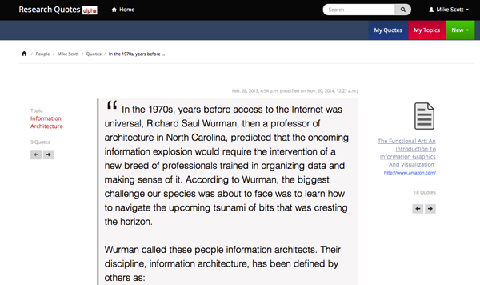
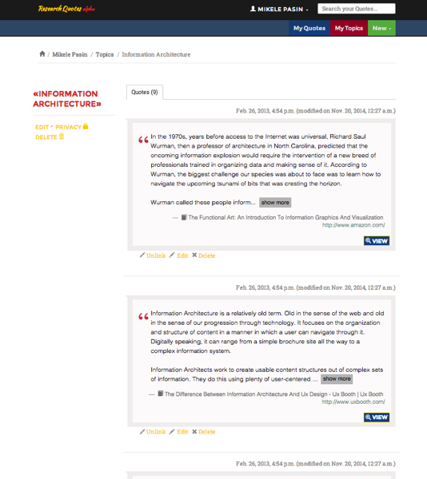
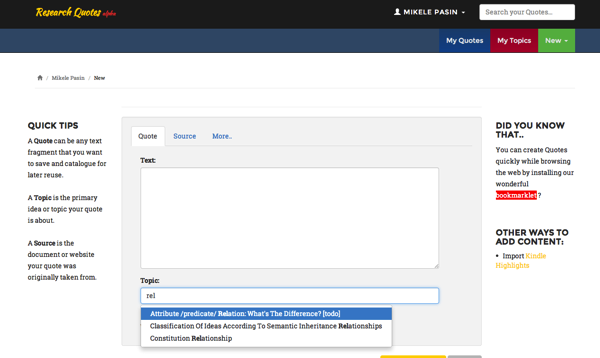
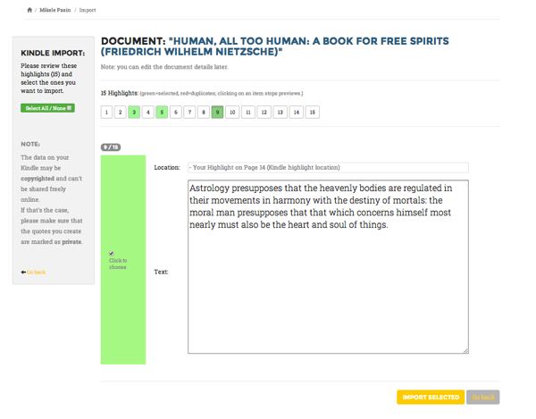
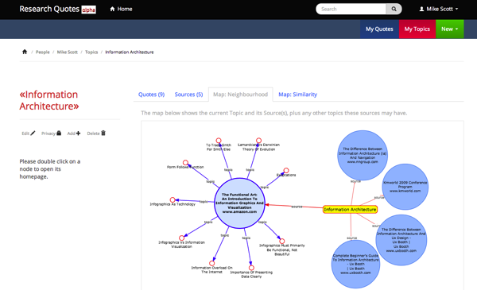
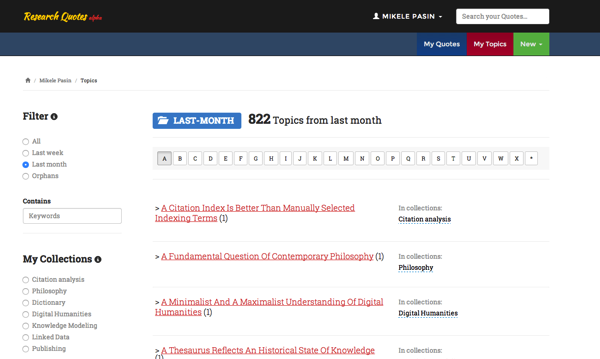

Take control of your digital annotations with ResQuotes.com
Over the last few weeks, I had a chance to complete a personal project I've been working on for a while: www.resquotes.com. This is a personal information management site that allows users to collect and organize snippets of text ('highlights') made while reading digitally.
It's an alpha release, still largely untested and rough around the edges, so I'd encourage anyone interested in the topic to experiment with it and get in touch with questions, feedback, or proposals for collaboration to make it better.

Why?
These days, anyone who's reading and studying as part of their daily routine is probably doing it via some digital device too. Whether that's an e-reader like the Kindle, or just the default PDF viewing software that comes with a Mac or PC, digital reading saves lots of time in many cases, but also makes it very cumbersome to annotate texts and especially keep track of these annotations.
ResQuotes.com emerged from this experience: I needed a way to save and organize the important snippets I read and wanted to be able to revisit in the future, even if I didn't know exactly when.
This is the same spirit (I assume!) that made Chomsky write these words in one of his latest works:
..reading a book doesn’t just mean turning the pages. It means thinking about it, identifying parts that you want to go back to, asking how to place it in a broader context, pursuing the ideas. There’s no point in reading a book if you let it pass before your eyes and then forget about it ten minutes later. Reading a book is an intellectual exercise, which stimulates thought, questions, imagination.
Noam Chomsky
Likewise, all the hours spent reading PDF files and Kindle books felt to me not as beneficial as they could have been - unless I had a way to collect and get back to the quotes that caught my attention in the first place.
How it works
In a nutshell, ResQuotes currently allows to import text snippets, either from the web or from your Kindle, and use them to create collections of related content via topics and folders.

A topic is like the main gist a quote is about. Topics can (and are supposed to) be reused and provide a basic organising mechanism for the quotes one saves. So, you can have many quotes on the topic of 'science teaching in the 20th century', or on 'information architecture'.
So you can have a Topic page which collects together a bunch of quotes which focus on the same idea or concept.

Quotes and topics can be added to the application in two main ways. Either by filling out a web form...

...or by extracting it directly from your Kindle.

Once you've imported a bunch of content into the system, you will be able to search for it or organize it further using collections.
That allows also to automatically create 'topic maps' based on the relatedness and similarity between quotes and topics.


What's next
It's difficult to say what will happen next. I'd like to add more import mechanisms, download options, and improvements to the way collections are created. But really, I'd like to get more feedback from real users!
So please - send me your comments if you have any. By the way, next week I'll be in Oxford, UK, giving a demo of the app at the Force11 conference.
Happy reading with resquotes.com!